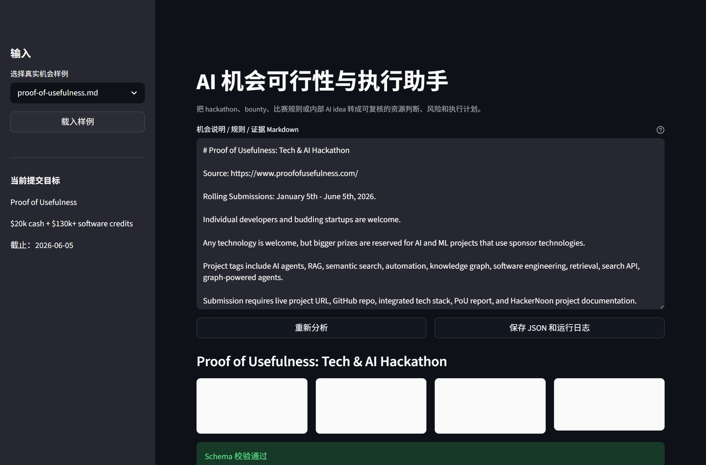
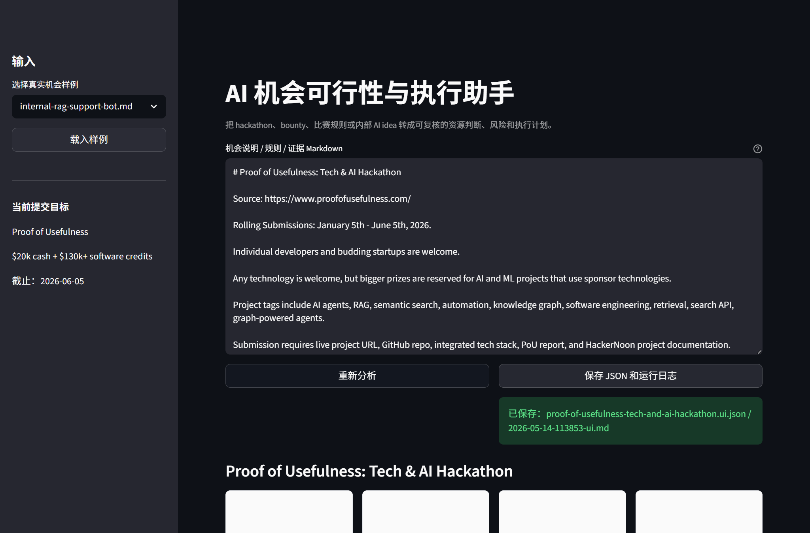

AI Opportunity Execution Harness turns messy opportunity briefs into auditable build decisions.
Eligibility, deadlines, platform lock-in, hardware needs, and deliverables usually live in different paragraphs.

Open to join is not enough. A project can still be a poor fit if the real architecture is tied to a closed workflow.
At first glance, Microsoft Agent Academy looks like another AI agent opportunity.
The harness marks it as reference, so we do not spend days building a platform-config demo.
An internal RAG support bot becomes a candidate only after documents, reviewers, and quality evidence are clear.

Built for independent builders, small teams, and practical AI opportunities where usefulness matters more than demo theater.